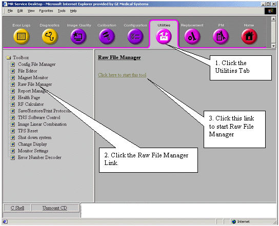
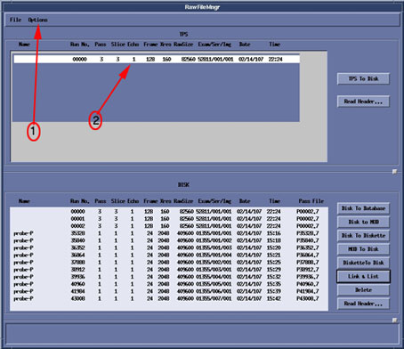
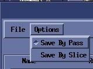
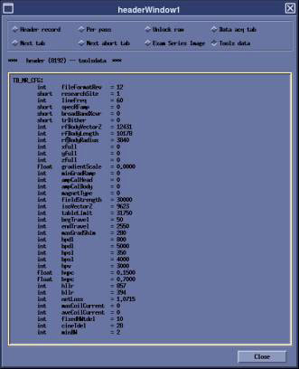

Operating Documentation
Direction 5133330-3, Rev# 14
Signa EXCITE HD 3.0T Service Methods
Module Version 2.0, Version Date 1/14/09
Operating Documentation |
The Raw File Manager tool allows transfer of raw data files between AP (Array Processor) Memory, the Image (system) disk, and the MOD or diskette. It can determine the last raw data file run number, as well as disk (for example, locked) raw data file housekeeping ("Rebuild File(s) on Disk"). It also provides for manually perming/locking raw files.
| NOTE: | TPS/ISE "memory" refers to the Memory Board in the array processor boards (where acquired raw data are placed). |
For Cine and 3-D scans, only NOREC raw data files can be transferred from AP memory.
For multi-slice scans, single slices can be transferred from AP memory only for NOREC raw data files (i.e., for multi-slice NOPROC, the entire scan—all slices—must be transferred).
Illustration 1: Starting Raw File Manager from the Service Browser

Refer to the steps in Illustration 1 above.
Start the MR Service Browser if it is not already running.
Click Utilities.
Under Toolbox, select Raw File Manager, then [Click here to start this tool].
Refer to Illustration 2 to view the Raw Data Interface.
| ||||
| RAW DATA IS NO LONGER AVAILABLE TO SAVE ONCE [SAVE SERIES] OR [DOWNLOAD] HAVE BEEN CLICKED. | ||||
| NOTE: | Raw data is unreconstructed data used to create an image and is not automatically saved. Because the raw data resides in temporary memory of the system, the data must be saved before clicking [Save Series] or [Download]. |
Configure how the data is to be saved. Select Save by Pass or Save by Slice from the Options menu at the top of the window. See Illustration 2 and Illustration 3.
Save By Pass: Saves entire series
Save By Slice: Saves only selected slices
Illustration 2: Raw Data Interface

Illustration 3: Raw Data Interface Options

Select the data to be saved by clicking the desired data in the TPS window on the top of the screen (see Illustration 2).
Click [TPS to Disk] to save the data.
Saved data will now appear in the lower Disk Window (see Illustration 2).
| NOTE: | Using the buttons on the lower right side of the raw file manager can move saved data to secondary storage locations. |
| NOTE: | For Buttons 1-6 in this section, insert proper storage media before clicking the button to start the Save/Restore operation. |
[TPS to Disk]: Saves the selected raw data to the system disk.
[Disk to Database]: Saves the selected raw data from system disk to database.
[Disk to MOD]: Saves selected raw data from system disk to MOD.
[Disk to Diskette]: Saves selected raw data from system disk to 3.5-inch floppy drive on the host computer.
[MOD to Disk]: Restores raw data saved on MOD to the system disk.
[Diskette to Disk]: Restores raw data saved on 3.5-inch floppy drive to the system disk.
[Link and List]: Creates links for all Pass Files. Required for Recon program.
[Delete]: Deletes saved raw data on the system disk.
Delete Procedure: Highlight the raw data by clicking it with the mouse. Click [Delete].
| NOTE: | The raw data save on the system disk will remain until deleted. Remember to erase this data on the disk or system performance will degrade as the disk becomes full. |
[Read Header]: Opens raw data header viewer (see Illustration 4).
Illustration 4: Header File (Tools Data Example)
